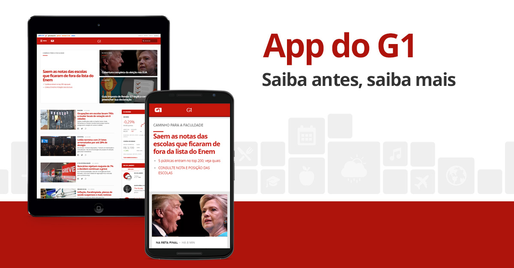

APP G1

JÁ PENSOU EM ESTUDAR E SE DIVERTIR AO MESMO TEMPO?

learn !!!
Saiba antes, saiba mais Com o app do G1 você fica por dentro das principais notícias do Brasil e do mundo, a qualquer hora e em qualquer lugar.
Explore as perguntas de acordo com as áreas de conhecimento que caem no Enem. Seu estudo vai ficar muito mais organizado.
São diversas questões preparadas por especialistas com base nos melhores simulados e edições anteriores.
noticias
Elas valem mais pontos e são enviadas por notificações para todos os usuários do aplicativo.
Em vez de colocar a formatação dentro do documento, o desenvolvedor cria um link (ligação) para uma página que contém os estilos, procedendo de forma idêntica para todas as páginas de um portal. Quando quiser alterar a aparência do portal basta portanto modificar apenas um arquivo.
Com a variação de atualizações dos navegadores (browsers) como Internet Explorer que ficou sem nova versão de 2001 a 2006, o suporte ao CSS pode variar. O Internet Explorer 6, por exemplo, tem suporte total a CSS1 e praticamente nulo a CSS2. Navegadores mais modernos como Google Chrome e Mozilla Firefox tem suporte maior, inclusive até a CSS3, ainda em desenvolvimento.
A interpretação dos navegadores pode ser avaliada com o teste Acid2, que se tornou uma forma base de revelar quão eficiente é o suporte de CSS, fazendo com que a nova versão em desenvolvimento do Firefox seja totalmente compatível a ele assim como o Opera já é. O Doctype informado ou a ausência dele determina o quirks mode ou o strict mode modificando o modo como o CSS é interpretado e a página desenhada.
Descrição
O App G1 Enem 2016 traz novidades para você se preparar para a prova! Agora com perguntas enigmas que valem mais pontos e novas perguntas para você estudar e se divertir ao mesmo tempo com o jogo. Desafie seus amigos e desconhecidos ou jogue sozinho e acompanhe sua posição no ranking geral, dos seus amigos ou do curso. Divirta-se, reforce seus estudos e saia na frente! ======== Baixe agora o aplicativo G1 Enem e inicie os desafios! ======== . Novidade: perguntas enigmas que valem mais pontos. Fique ligado nas notificações para participar! · Jogue, treine e explore os principais assuntos que podem cair na prova. · Teste seus conhecimentos com centenas de perguntas. · Vídeos exclusivos dão dicas das matérias mais importantes. · Divirta-se jogando com seus amigos e com desconhecidos. ======== Conheça as ferramentas que vão te ajudar na preparação para o Enem. ► CATEGORIAS As perguntas estão divididas nas mesmas categorias utilizadas na prova do Enem. Explore por: Ciências Humanas, Ciências da Natureza, Linguagens e Códigos e Matemática. Organize seu estudo!
Em vez de colocar a formatação dentro do documento, o desenvolvedor cria um link (ligação) para uma página que contém os estilos, procedendo de forma idêntica para todas as páginas de um portal. Quando quiser alterar a aparência do portal basta portanto modificar apenas um arquivo.
Com a variação de atualizações dos navegadores (browsers) como Internet Explorer que ficou sem nova versão de 2001 a 2006, o suporte ao CSS pode variar. O Internet Explorer 6, por exemplo, tem suporte total a CSS1 e praticamente nulo a CSS2. Navegadores mais modernos como Google Chrome e Mozilla Firefox tem suporte maior, inclusive até a CSS3, ainda em desenvolvimento.
A interpretação dos navegadores pode ser avaliada com o teste Acid2, que se tornou uma forma base de revelar quão eficiente é o suporte de CSS, fazendo com que a nova versão em desenvolvimento do Firefox seja totalmente compatível a ele assim como o Opera já é. O Doctype informado ou a ausência dele determina o quirks mode ou o strict mode modificando o modo como o CSS é interpretado e a página desenhada.


fim
► PERGUNTAS Inspirados nos melhores simulados e exames passados, especialistas prepararam perguntas exclusivas. ► SUGESTÕES DE VÍDEOS Assista a vídeos sobre os principais assuntos cobrados no Enem. O aplicativo irá enviar sugestões inteligentes baseadas nos seus erros e acertos. Também dá para buscar vídeos no nosso catálogo. ► RANKING Acumule pontos e compare sua posição entre aqueles que concorrem com o mesmo curso que você (ex: administração, direito, medicina). ► NOTÍCIAS Acompanhe as últimas notícias sobre o Enem e fique por dentro das principais datas e acontecimentos. Receba notificações para se manter atualizado sem realizar nenhum esforço. ► BADGES Atinja os objetivos do jogo e colecione medalhas que indicam sua trajetória e marcam as conquistas. Depois de ganhar a primeira, você vai querer pegar todas!
► PERGUNTAS ENIGMA Valem mais pontos e são dissertativas: você tem 2 dois minutos para tentar acertar. ► NOTIFICAÇÕES Quando uma nova pergunta enigma estiver no ar, você será notificado. Atenção, elas expiram e você pode perder sua chance de faturar 2 mil pontos de uma só vez. ========
Para mais informações acesse: http://g1.com.br/aplicativo-g1-enem/ Para o envio de feedbacks e sugestões, envie e-mail para https://falecomog1.globo.com/ Desenvolvido por Outra Coisa http://outracoisa.co